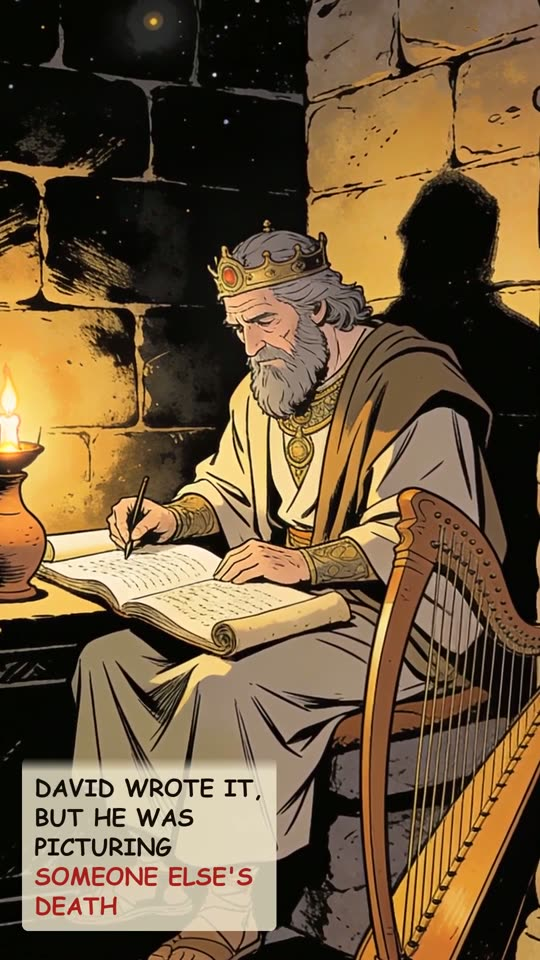
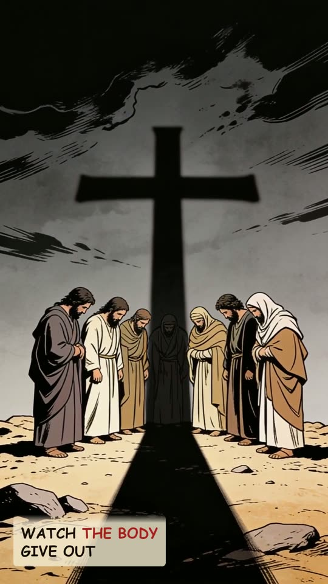
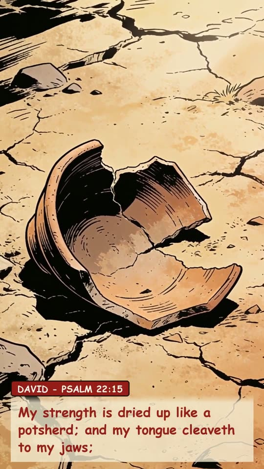
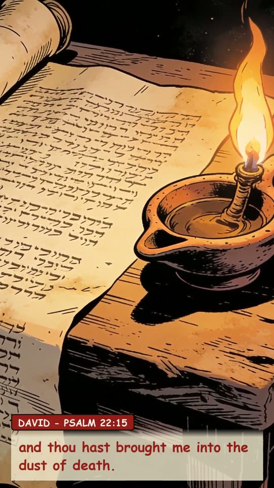
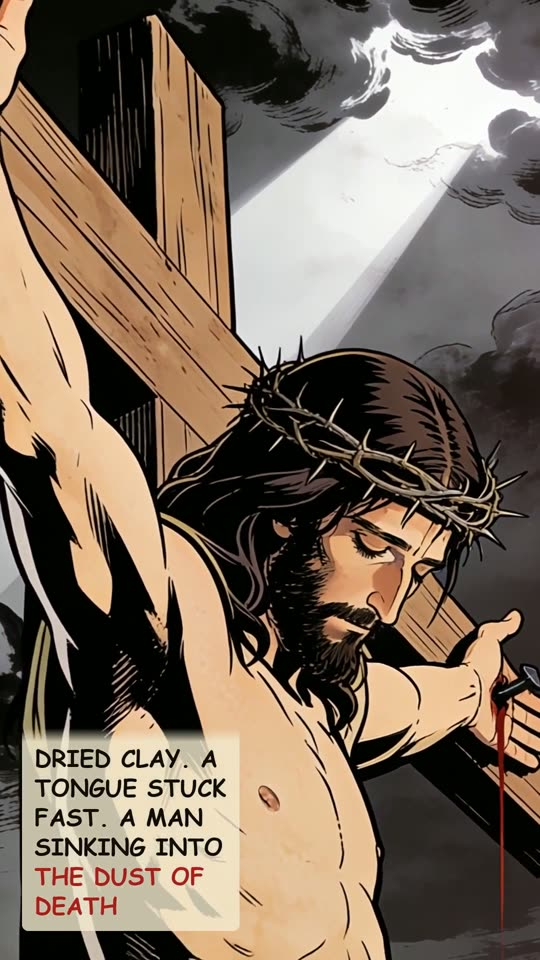
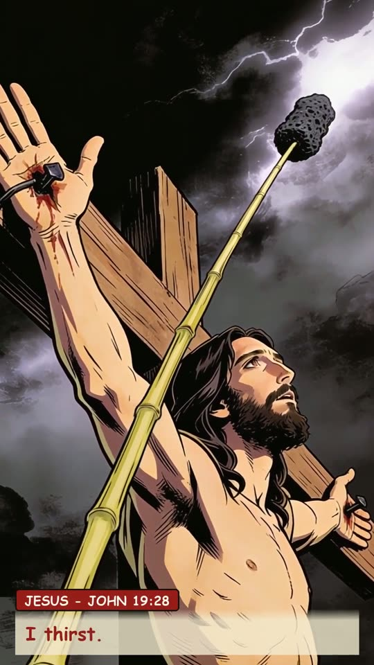
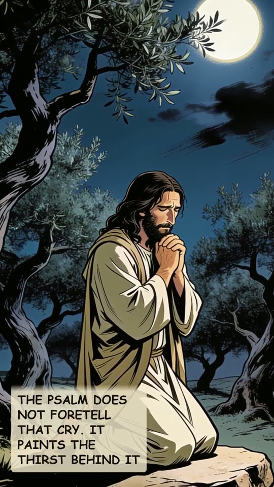
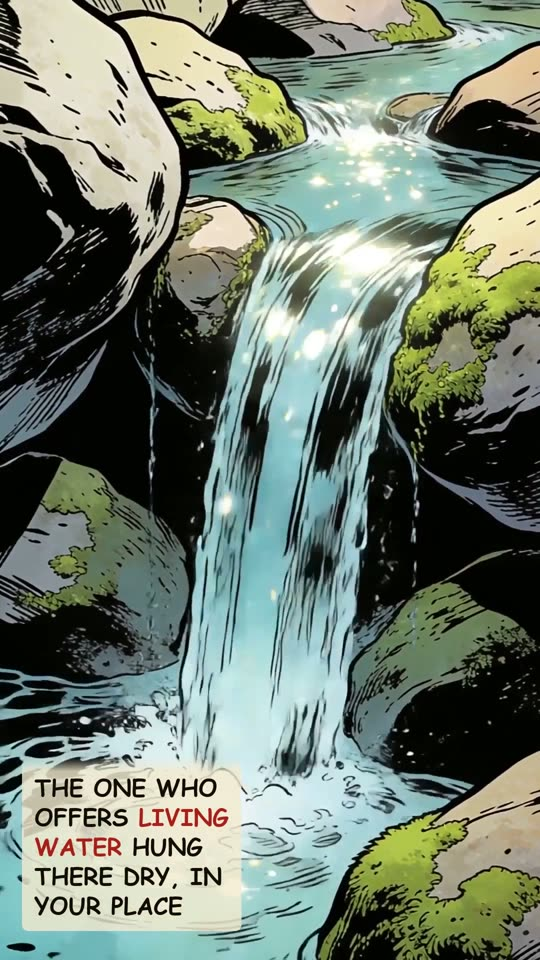
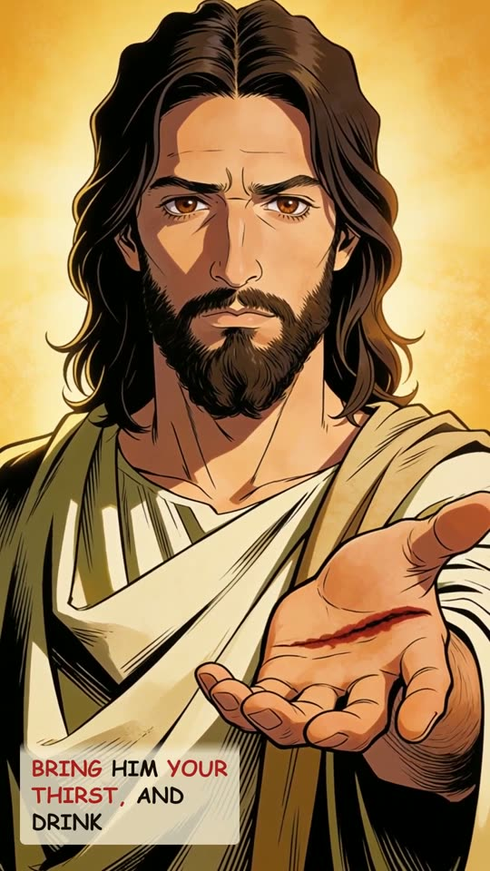
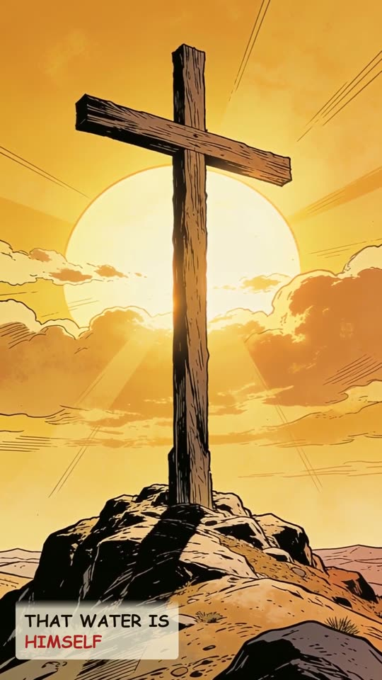

I Thirst
Two words from the cross. David wrote the thirst a thousand years before.












The narration
The One who made every ocean gasped two words on a cross: I thirst. Psalm twenty-two. David wrote it in the first person, but he was picturing someone else's death. Watch the body give out: "My strength is dried up like a potsherd; and my tongue cleaveth to my jaws; and thou hast brought me into the dust of death." Dried clay; a tongue stuck fast; a man sinking into the dust of death. Then John records the dying Jesus' cry: "I thirst." Psalm twenty-two does not foretell that cry, it paints the thirst behind it, a thousand years before He felt it. The One who offers the world living water hung there dry, in your place. Bring Him your thirst, and drink. That water is Himself.